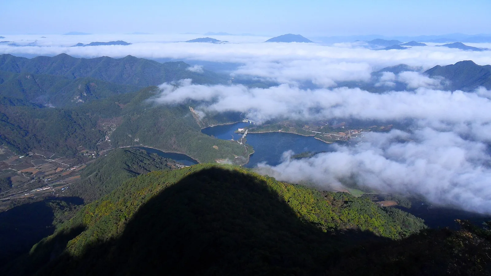
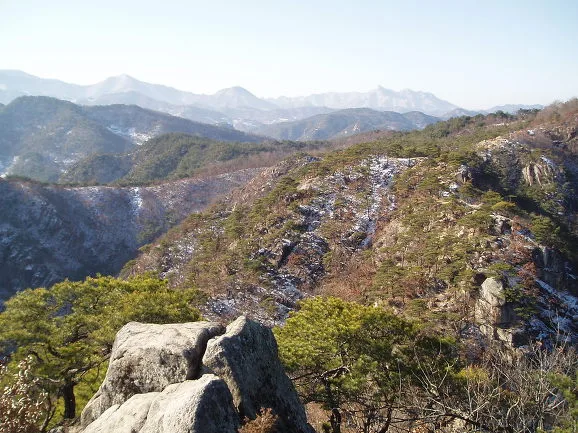
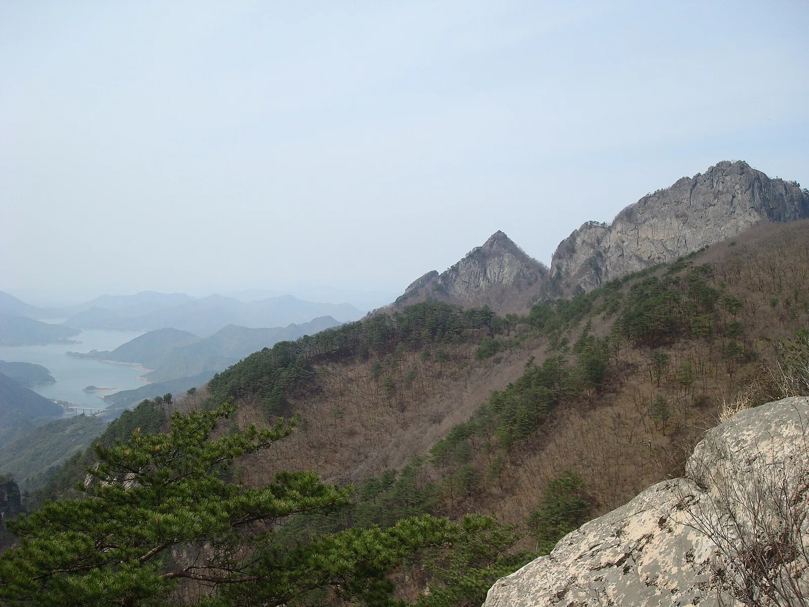
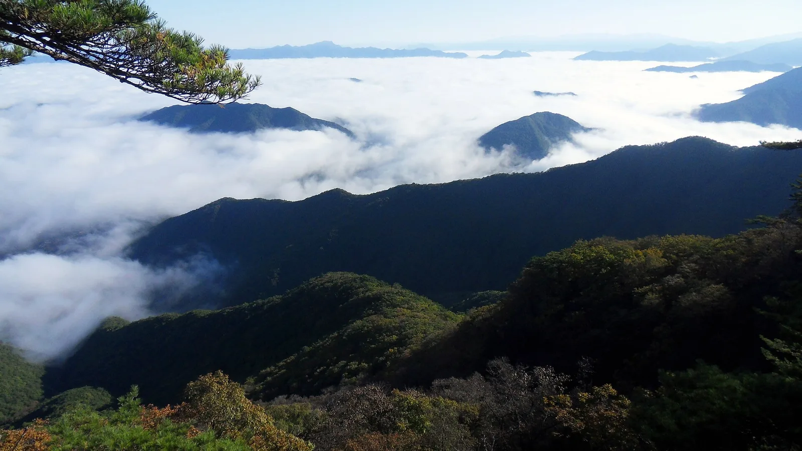
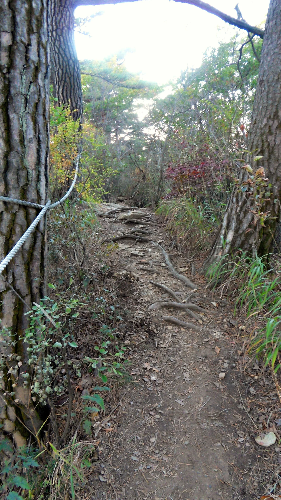
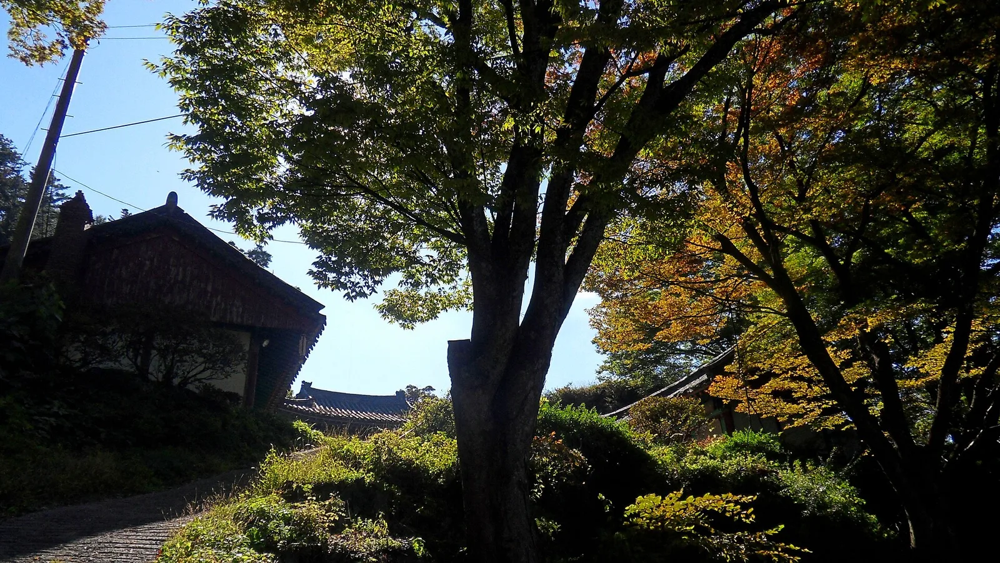
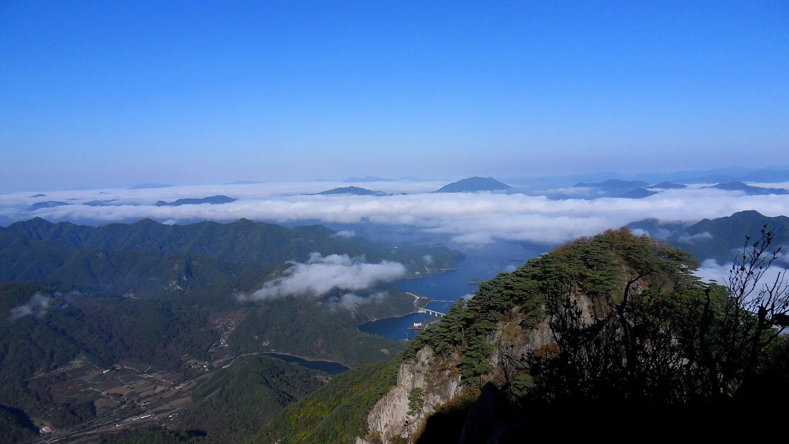
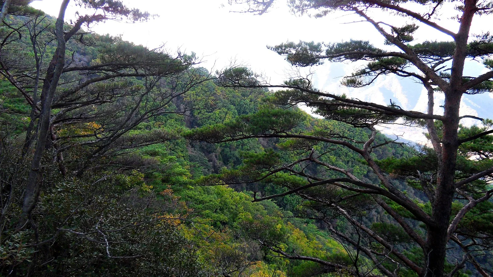

▲ 월악산 능선에서 내려다본 충주호(청풍호). 가을철 이른 아침에는 구름바다(운해)가 호수를 뒤덮는 장면을 볼 수 있다 ⓒ Wikimedia Commons
충북 제천·충주와 경북 문경에 걸친 월악산은 1984년 국내 17번째 국립공원으로 지정됐으며, 면적은 287.571㎢에 이른다. 최고봉인 영봉은 해발 1,097m로, 정상에 서면 발아래로 충주호(청풍호)가 펼쳐지는 풍경이 압권이다. 산세가 험준해 예로부터 '월악영봉'이라 불렸고, 가을철에는 만수계곡과 송계계곡 두 축을 따라 단풍이 짙게 물든다.
1. 영봉 — 해발 1,097m 정상에서 보는 충주호 구름바다
영봉은 뾰족하게 솟은 화강암 암봉으로, 정상에 서면 사방으로 소백산맥과 충주호 물줄기가 한눈에 들어온다. 특히 가을~초겨울 이른 아침, 일교차가 큰 날에는 충주호 위로 구름바다(운해)가 깔리는 장면을 만날 수 있어 사진 애호가들 사이에서 명소로 꼽힌다.

▲ 구담봉 방면에서 바라본 월악산 주능선. 서리가 내려앉은 늦가을 풍경이다 ⓒ Wikimedia Commons
영봉으로 오르는 대표 코스는 제천 덕주골(송계매표소)에서 출발해 덕주사 마애불을 지나는 길과, 충주 쪽 보덕암에서 출발하는 길 두 갈래가 있다. 덕주골 코스는 편도 약 4.9km로 왕복 6~7시간이 걸리는 정통 코스이고, 보덕암 코스는 상대적으로 짧지만 경사가 가파르다.

▲ 월악산 정상 능선의 뾰족한 화강암 봉우리들. 험준한 산세 때문에 예로부터 '월악영봉'이라 불렸다 ⓒ Wikimedia Commons

▲ 월악산 능선에서 바라본 원경. 멀리 충주호 물줄기와 겹겹이 이어지는 산줄기가 시야에 들어온다 ⓒ Wikimedia Commons
2. 만수계곡·송계계곡 — 두 축으로 물드는 월악산 단풍

▲ 월악산 등산로. 나무뿌리가 그대로 드러난 흙길 구간이 많아 산행화 착용이 권장된다 ⓒ Wikimedia Commons
만수계곡은 충주시 수산면 방면에 자리한 계곡으로, 맑은 물과 기암이 어우러져 여름 피서지이자 가을 단풍 명소로 함께 사랑받는다. 송계계곡은 제천시 덕산면 덕주골 일대를 흐르는 계곡으로, 덕주사로 향하는 길목에 자리해 단풍철이면 계곡을 따라 붉게 물든 나무들이 이어진다. 두 계곡 모두 영봉 등산과 연계해 함께 둘러보기 좋다.
| 코스 | 구간 | 거리(편도) | 소요시간(왕복) | 난이도 |
|---|---|---|---|---|
| 덕주골(송계) 코스 | 덕주사매표소 - 덕주사 - 마애불 - 영봉 | 약 4.9km | 6~7시간 | 상 |
| 보덕암(충주) 코스 | 보덕암 - 헬기장 - 영봉 | 약 3.5km | 5~6시간 | 상(급경사) |
| 만수계곡 코스 | 만수휴게소 - 만수계곡 - 하봉·중봉 방면 | 약 4km | 5시간 안팎 | 중~상 |
3. 덕주사 — 보물 마애여래입상을 품은 송계계곡 초입 사찰

▲ 월악산 자락 사찰 경내. 늦가을 단풍이 절정에 이르면 전각 지붕과 단풍이 어우러진 풍경을 볼 수 있다 ⓒ Wikimedia Commons
덕주골 코스 초입에 자리한 덕주사는 신라 진평왕 대 창건설이 전해지는 고찰로, 인근 암벽에 새겨진 마애여래입상(보물 제406호)이 유명하다. 거대한 자연 암벽에 조각된 이 불상은 높이가 13m에 달해 국내 마애불 가운데도 규모가 큰 편에 속한다. 덕주사에서 마애불까지는 완만한 오르막으로 30분 안팎이면 다녀올 수 있어, 정상까지 오르지 않아도 가볍게 들를 만하다.
4. 교통·주차·개방시간 정보

▲ 월악산 정상부에서 내려다본 충주호 물줄기와 다리. 구름이 걷히면 호수와 마을 전경이 한눈에 들어온다 ⓒ Wikimedia Commons

▲ 월악산 등산로 중턱에서 바라본 숲과 능선. 소나무와 활엽수가 뒤섞여 가을이면 색색의 단풍을 이룬다 ⓒ Wikimedia Commons
| 항목 | 내용 |
|---|---|
| 국립공원 지정 | 1984년 12월(17번째 국립공원) |
| 면적 | 약 287.571㎢(제천·충주·단양, 경북 문경) |
| 최고봉 | 영봉 1,097m |
| 주요 탐방기점 | 덕주골(송계)지구(제천), 보덕암지구(충주), 만수계곡지구(충주) |
| 입장료 | 무료(국립공원 입장료 전면 폐지) |
| 주차 | 덕주골·만수계곡 공영주차장 이용, 단풍철 주말 혼잡 |
덕주골지구는 중부내륙고속도로 및 제천 방면 국도에서 접근이 편리하며, 충주호 유람선 선착장과 연계해 당일 코스를 짤 수도 있다.
5. 월악산 영봉·만수계곡·송계계곡, 가기 전 체크리스트
✅ 월악산 가기 전 체크리스트
· 1984년 국내 17번째 국립공원 지정, 면적 287.571㎢, 최고봉 영봉 1,097m
· 덕주골(송계) 코스는 편도 약 4.9km, 왕복 6~7시간 소요되는 정통 등반 코스
· 덕주사 마애여래입상은 보물 제406호, 높이 13m의 대형 마애불
· 만수계곡·송계계곡 두 축을 따라 단풍이 물들며 여름철 계곡 피서지로도 인기
· 가을~초겨울 이른 아침 영봉 정상에서 충주호 구름바다(운해)를 볼 수 있음
· 국립공원 입장료 전면 무료
· 덕주골·만수계곡 각각 공영주차장 이용 가능, 단풍철 주말은 이른 방문 권장